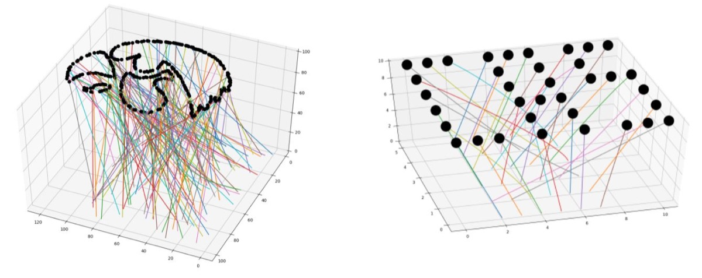
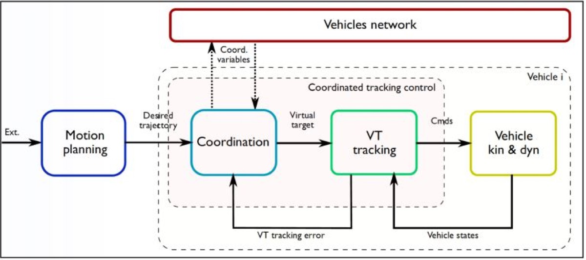
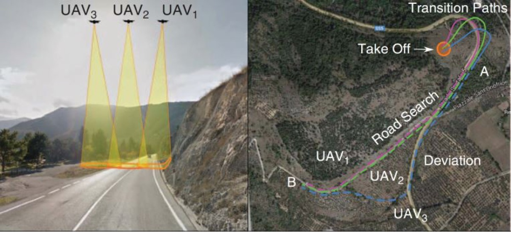
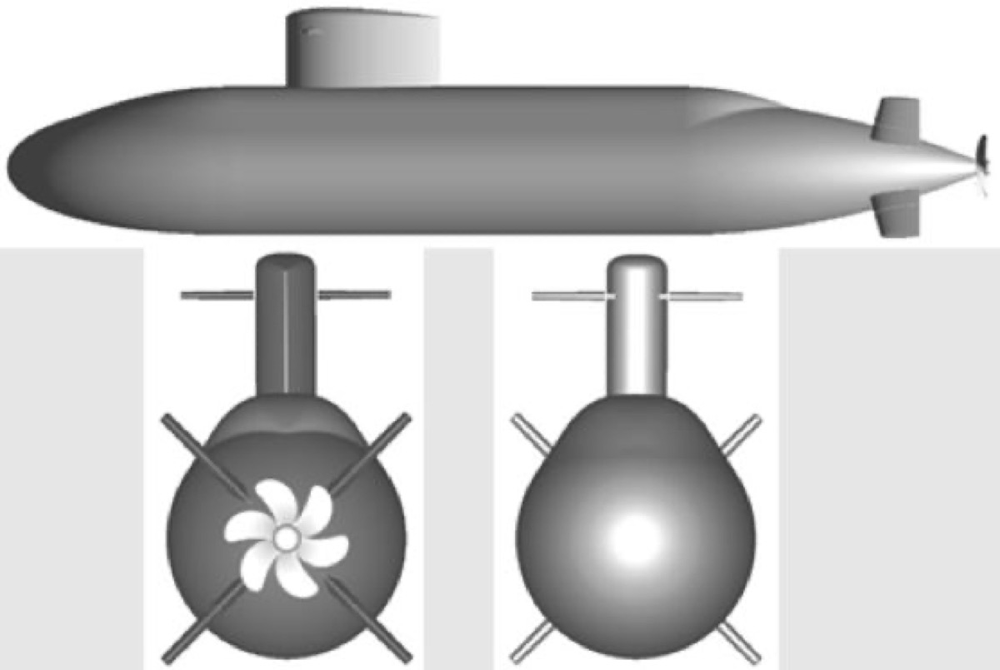
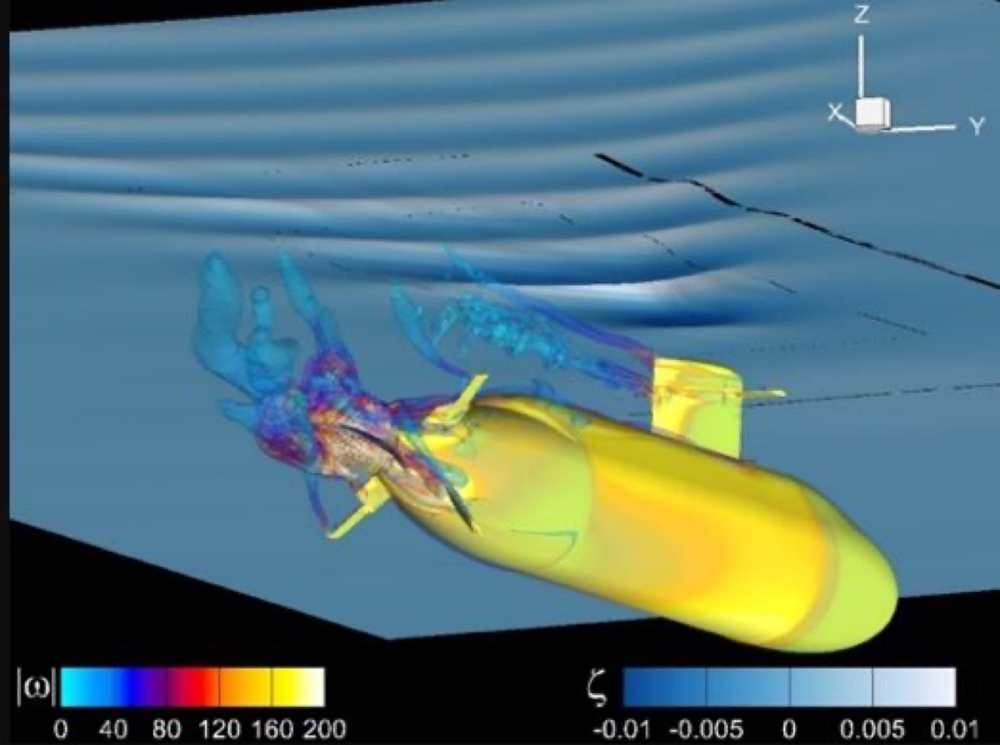
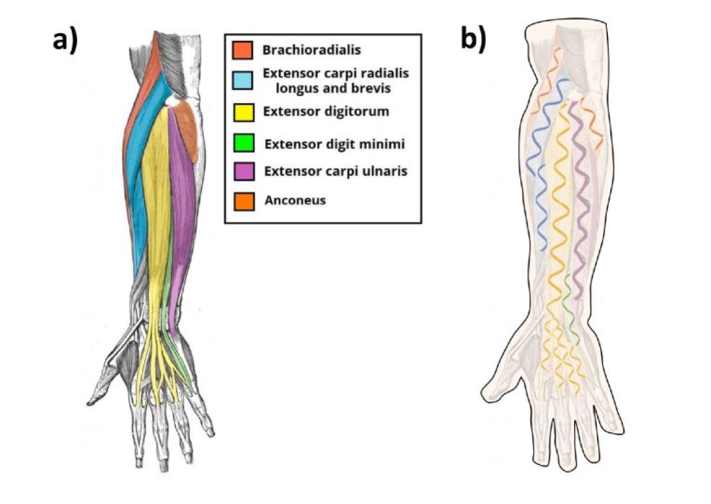

Research
I develop resilient autonomous systems that can operate safely and effectively in contested, congested, and human-inhabited environments, drawing on control theory, optimal and adaptive control, and machine learning, and demonstrating these capabilities across aerial, underwater, ground, and soft robots.
Optimal motion planning with Bernstein polynomials
Many planning problems for autonomous vehicles are optimal control problems: find the trajectory that minimizes time, energy, or risk while respecting the vehicle’s dynamics and avoiding obstacles and other vehicles. These problems are infinite-dimensional and must be approximated before a computer can solve them.
My group develops direct methods that approximate trajectories with Bernstein (Bézier) polynomials. Their geometric properties make it cheap to check constraints such as minimum separation between vehicles over the whole trajectory, not just at sample points, which guarantees safety at low computational cost. We have proved that these approximations converge to the true optimal solution, and we have extended them to composite polynomials, uncertain environments, and surfaces for continuum robots.
To reach real-time speeds, we pair these methods with learning: transformer networks that predict Bernstein trajectories, and collision-free robot learning (PolyFusion, CoRL 2026). With colleagues at the University of Bologna, we also use polynomial internal models for robust output regulation. A book collecting this work, Bernstein/Bézier Polynomials in Control, Estimation, and Planning, is forthcoming from Springer Nature in 2027.

Cooperative autonomous systems
A team of vehicles can be more robust, reliable, and efficient than a single heavily equipped vehicle, but only if the team can coordinate despite vehicle failures, faulty or intermittent communication, and complex environments. My work integrates three pieces into one framework with guarantees of safety and robustness:
This work began in collaboration with the University of Illinois Urbana-Champaign, the Naval Postgraduate School, and Instituto Superior Técnico in Lisbon, and has been applied to cooperative road search, target monitoring, and localization of avalanche victims.


Autonomy in the airspace
As autonomous aircraft become common, they must share airspace with piloted aircraft, especially near airports. With NASA, my group develops trajectory optimization for aircraft approaching and leaving airports, including pilot-centric planning for autonomous final approach and learning-based trajectory generation that runs in real time. With NSF support, we are also integrating drones and crewed aircraft near airports, and engineering safe AI for decision making and motion planning in autonomous vehicles.
Control of underwater vehicles
Underwater vehicles are hard to control at low speed, because control surfaces lose authority, and near the free surface, where suction forces and waves pull the vehicle up and pitch it bow-down. Together with researchers at IIHR–Hydroscience & Engineering, my group designs robust and adaptive controllers with guaranteed performance in these conditions, including autopilots for depth and pitch in waves and adaptive reference management with model predictive control.
We derive vehicle models from computational fluid dynamics and test the controllers in REX, a University of Iowa code that resolves the hydrodynamics and body motion together, so the controller is evaluated against realistic physics rather than a simplified model. Recent work extends these ideas to a biomimetic robotic fish.


Soft robots and artificial muscles
With Caterina Lamuta and her SMMS Lab, my group models and controls robots driven by twisted and coiled artificial muscles (TCAMs). These fibers are cheap, light, strong, and need very little voltage, which makes them attractive for wearable and bioinspired devices, but their behavior is nonlinear and hard to predict.
We build physics-based models using Cosserat rod theory, which earned a 2026 Smart Materials and Structures Best Paper Award, and use them for robust control and path planning. Applications include an octopus-inspired soft arm, a wrist rehabilitation exoskeleton, a soft end-effector for in-space assembly, and powered orthotic devices for the upper limb.

Software
BeBOT (Bernstein/Bézier Optimal Trajectories) is my group’s open-source toolkit for generating optimal trajectories for one or many autonomous vehicles. It is available in Python, with MATLAB, C++, and CasADi versions. More code is on the lab GitHub.
Sponsors
My research has been supported by:
- National Science Foundation (NSF)
- Office of Naval Research (ONR)
- NASA
- NASA Iowa Space Grant Consortium
- Air Force Research Laboratory (AFRL)
- Amazon
- Automotive Research Center, University of Michigan